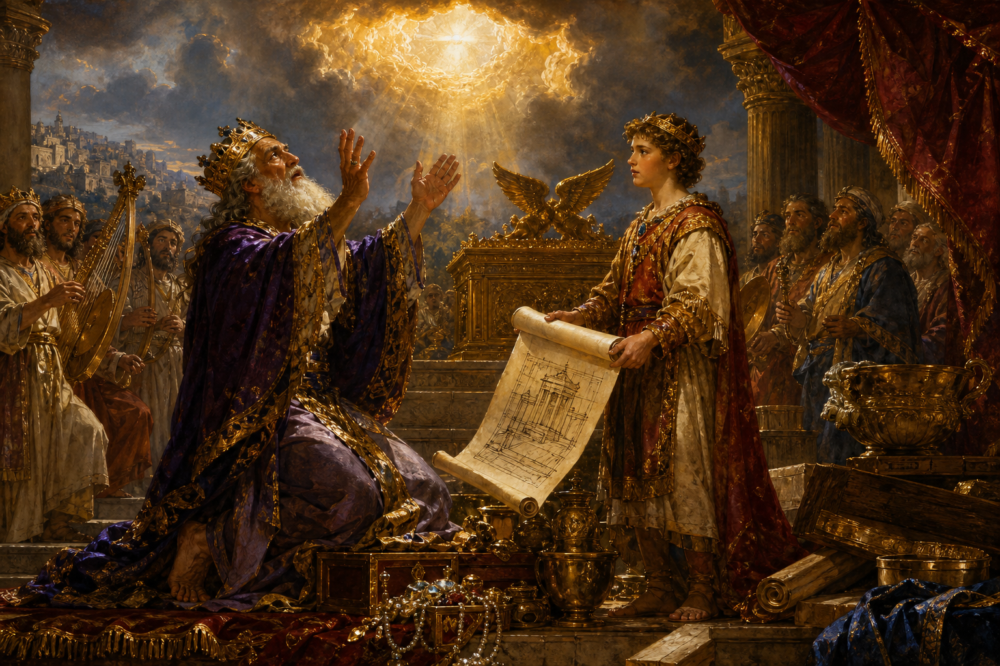

Old Testament · Book 13 of 39
1 Chronicles
Long lists of names trace a faithful God's hand through generations, before David's reign is retold as a pattern of worship handed down to his son.
1 Chronicles was written for a people returning from exile, reminding them that their story did not begin in captivity — it began with a God who has kept covenant with their family since Adam.
He shall build an house for my name; and he shall be my son, and I will be his father.
What happens in 1 Chronicles
The book opens with nine chapters of genealogies, stretching all the way back from Adam through the patriarchs, the twelve tribes, and the line of David, down to the families who returned from exile to resettle Jerusalem. Far from being a dry record, these family lines are a quiet assurance to a scattered and discouraged people: God had not lost track of a single one of his children, and the promises made to their fathers still stood. The narrative then turns to the death of Saul and the reign of David, told with a particular focus — David's victories, his bringing of the ark of the covenant to Jerusalem with singing and rejoicing, and his deep desire to build a permanent house for the Lord. God tells David that this honour will belong instead to his son Solomon, but gives David the Davidic covenant, a promise that his throne will be established forever. In his final chapters, David spends his last strength preparing everything for the temple he will never build himself: the materials, the pattern, the organization of priests, Levites, singers, and gatekeepers, and a generous outpouring of gifts from the whole nation. The book closes with David's prayer of thanksgiving, the public anointing of Solomon as king, and David's peaceful death after a long and faithful reign.
Why it matters
1 Chronicles was written to remind a people rebuilding their lives after exile that they belonged to a story much larger than their recent loss — a story of a Living God who keeps his promises across generations and still calls his people into relationship, like a Father gathering his children home. Its emphasis on worship, the ark, and the temple points forward to a greater hope: that God's dwelling with his people, and his covenant with David's house, would one day be fulfilled completely and forever.
Jump to a chapter
1 Chronicles has 29 chapters — select one to begin reading there.